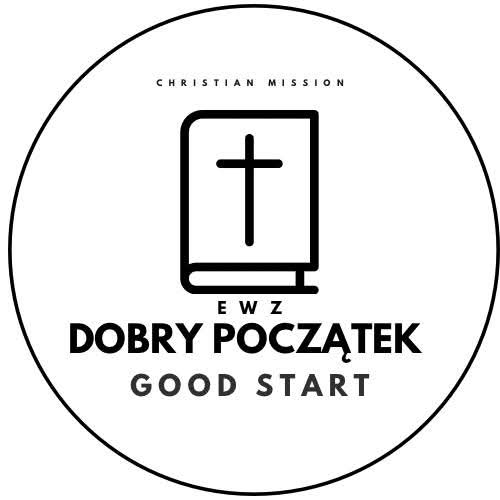

Wiara, która inspiruje
Przestrzeń do poznawania Słowa Bożego, zadawania pytań i odkrywania nadziei w Jezusie Chrystusie.
Europa
Azja
✝MISJA CHRZEŚCIJAŃSKA · DOBRY POCZĄTEK
Z wiarą w Boga i sercem dla ludzi. Odkrywaj z nami nadzieję, buduj relacje i dołącz do dobra, które zaczyna się od małych gestów.
Wiara ma sens, kiedy staje się miłością.
Dobro zaczyna się
od bycia razem.

01 / NASZE SERCE
Biblia i krzyż w naszym znaku przypominają o źródle nadziei. Serce — o tym, jak chcemy dzielić się nią z drugim człowiekiem.
Zrób z nami pierwszy krokPrzestrzeń do poznawania Słowa Bożego, zadawania pytań i odkrywania nadziei w Jezusie Chrystusie.
Uważność, rozmowa i obecność. Każdy człowiek zasługuje na szacunek i miejsce przy wspólnym stole.
Czas, umiejętności, modlitwa i pomoc materialna — dobro może mieć wiele form. Znajdź swoją.
02 / CHWILE, KTÓRE ŁĄCZĄ
03 / DOBRO WRACA
Pomóż tworzyć przestrzeń dla wiary, relacji i wzajemnej pomocy. Wybierz sposób wsparcia, który jest Ci najbliższy.
Możesz też podarować swój czas, umiejętności lub modlitwę.
04 / DZIENNIK MISJI
Przykładowe wpisy — zapowiedź przyszłego bloga misji.
05 / BĄDŹMY W KONTAKCIE
Chcesz poznać misję, dołączyć lub porozmawiać o współpracy? Odezwij się przez nasze profile.